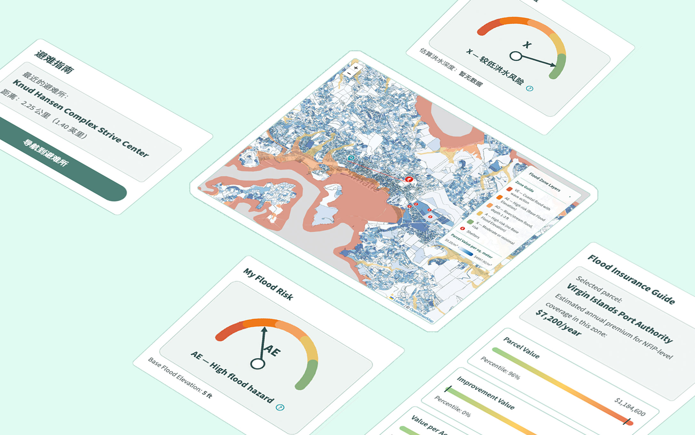
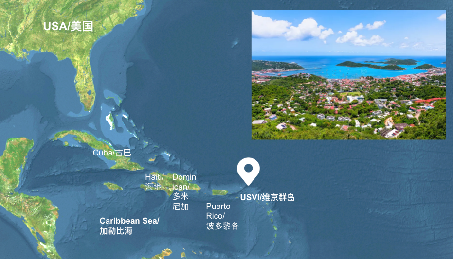
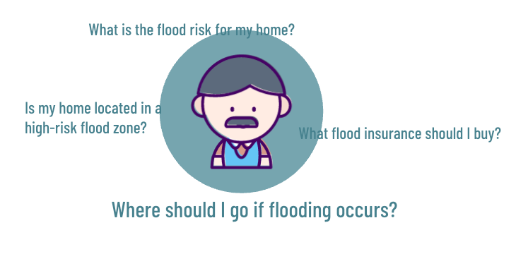
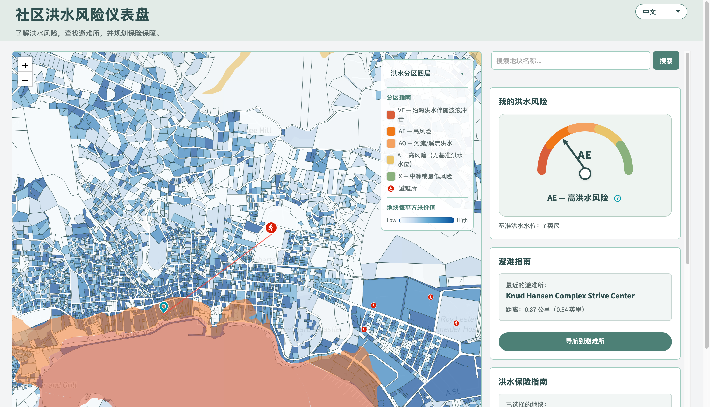
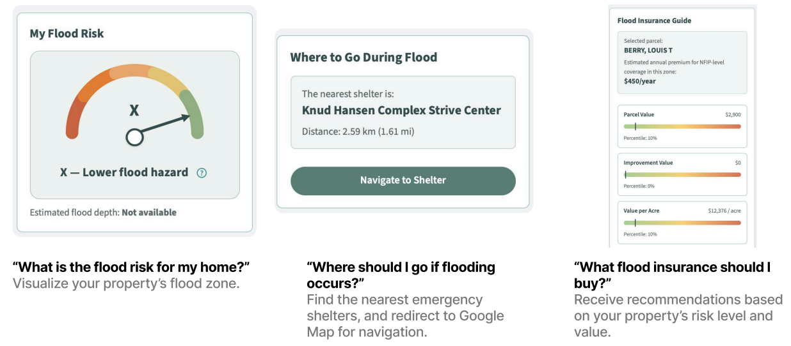
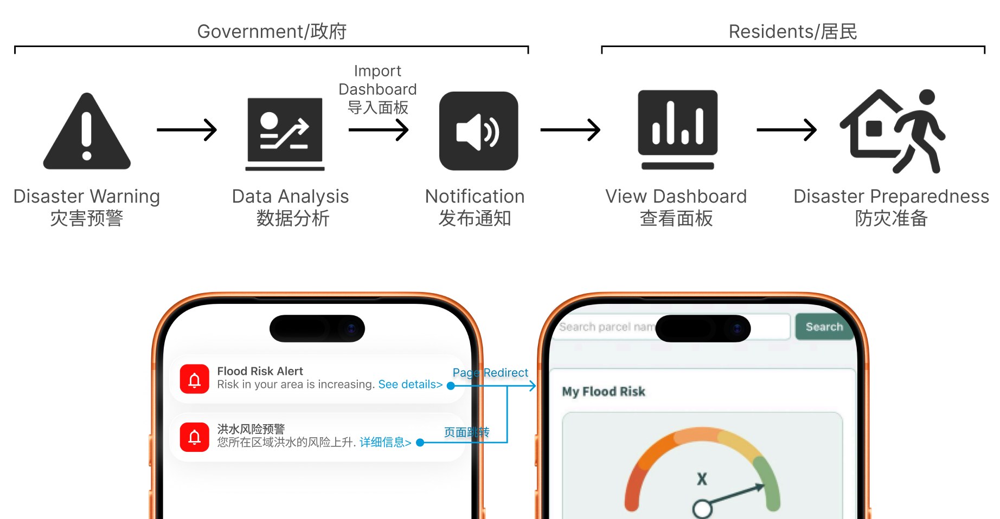
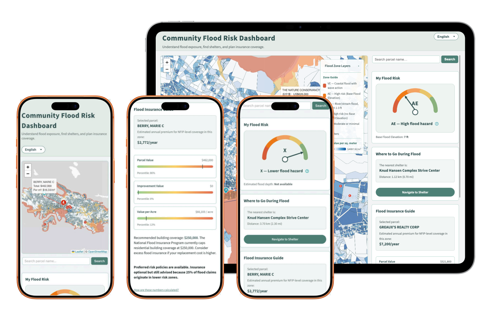
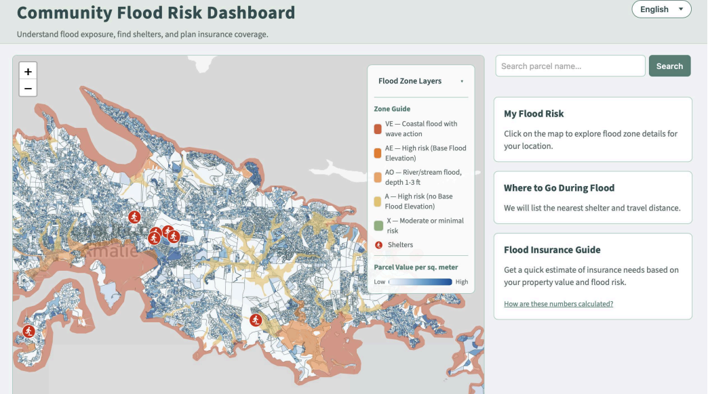

项目概要：维京群岛位于加勒比海，洪水是其最常见也是最具有破坏性的自然灾害。许多居民并不了解自己的洪水风险等级，或在紧急情况下如何避难。该洪水风险看板是一款为居民设计的交互式数据可视化工具。其目标是同步政府预警信息给居民，从而帮助居民了解自身的洪水风险，查找附近的应急避难所，并获得个性化的洪水保险建议。

维京群岛位于加勒比海，长期受到飓风与气候变化的影响。由于岛屿地形陡峭，洪水灾害频发，对居民财产造成巨大经济损失。
洪水易发：降雨量达到 4 英寸时发生洪水的概率高达 92%
影响范围广：在 2017 年的飓风“厄玛”和“玛丽亚”中，85% 的家庭报告其住宅受到损坏
经济损失大：飓风造成的经济损失估计约为 112.5 亿美元

图1 维京群岛地理区位图
尽管灾害频发，由于居住模式分散和政府资源有限等原因，居民个体需要对灾害做出充分准备。因此，有必要构建一个面向居民的洪水风险信息与决策支持工具。
通过调研，提炼出居民的核心需求集中在以下三点：

图2 居民需求收集
界面以地图为核心，强调直观与可操作性，帮助居民快速理解自身的洪水风险，并据此做出合理决策。面板左侧为交互式地图，集中展示不同等级的洪水分区信息。居民可以通过点击地图中的地块，或在搜索框中输入地块名称，快速定位并获取对应位置的风险评估结果。

图三 面板界面
右侧的三个信息板块则对选中地块进行结构化解读，包括洪水风险等级可视化、最近的应急避难设施及路径导航，以及与个人风险状况匹配的风险管理与保险建议。
| 需求 | 功能 |
| 我的房产有遭遇洪水的风险吗？ | 风险等级分析：结合高程数据，天气数据，水流模拟等计算居民所在地区的洪水风险等级 |
| 洪水来临时，我该如何避难？ | 最近的紧急庇护所：寻找最近的避难所，并规划路线 |
| 我如何将洪水灾害的风险降到最低？ | 洪水保险购买建议：基于房产价值推荐购买洪水保险的策略 |
表1 需求到功能的转化

图4 三个信息板块：“风险等级分析”，“最近的紧急庇护”，以及“保险购买建议”
接到灾害预警后，政府部门将根据最新的气象数据进行分析，并将分析结果导入面板。政府将发布相关预警信息，居民点击进入面板了解自己所在区域的风险和防灾建议，从而为防灾做出准备。

图5 面板使用的流程
整体设计以“少负担、强指引”为原则，将复杂的专业数据转化为可理解、可执行的行动信息。同时支持桌面/手机双端，以及英语、西班牙语和中文三种语言，提供适用性广阔的使用场景。

图6 多端的应用场景
支持语言：英语，西班牙语，中文
支持桌面端和移动端
Abstract: The U.S. Virgin Islands are located in the Caribbean, where flooding is one of the most frequent and destructive natural disasters. Many residents are unaware of their flood risk levels or how to seek shelter in emergency situations. The Flood Risk Dashboard is an interactive data visualization tool designed for residents. Its goal is to deliver government warning information to residents in a timely manner, helping them understand their flood risk, locate nearby emergency shelters, and receive personalized flood insurance recommendations.
The U.S. Virgin Islands are located in the Caribbean and have long been affected by hurricanes and climate change. Due to the islands’ steep terrain, flooding occurs frequently, causing significant economic losses to residents’ properties.
High Flood Risk: When rainfall reaches 4 inches, the probability of flooding is as high as 92%.
Wide Impact: During Hurricanes Irma and Maria in 2017, 85% of households reported damage to their homes.
Severe Economic Losses: The economic losses caused by the hurricanes are estimated at approximately $11.25 billion.
Pic 1. Location of the US Virgin Island
Despite the high frequency of disasters, residents must take primary responsibility for preparedness due to dispersed settlement patterns and limited government resources. Therefore, it is necessary to develop a flood risk information and decision-support tool for residents.
Through research, I identified three core needs of residents:
Is my property at risk of flooding?
Where should I seek shelter during a flood?
How can I minimize losses from flood disasters?
These three needs correspond to three stages: pre-disaster risk analysis, emergency response during the disaster, and post-disaster recovery and reconstruction.
Pic 2.Collections of Residents' Needs
The interface is centered around a map, emphasizing clarity and usability to help residents quickly understand their flood risk and make informed decisions. The left panel features an interactive map that displays flood zones by risk level. Residents can click on parcels on the map or enter a parcel name in the search box to quickly locate a property and view the corresponding risk assessment results.

Pic 3.UI of the dashboard
On the right, the three information panels provide a structured interpretation of the selected parcel, including the risk level analysis, the nearest shelters with route navigation, and risk management and insurance recommendations tailored to the user’s individual risk profile.
| Needs | Functions |
| Is my property at risk of flooding? | Risk Level Analysis: The flood risk level of a resident’s area is calculated by integrating elevation data, weather data, and hydrological flow simulations. |
| Where should I seek shelter during a flood? | Nearest Emergency Shelter: Identify the closest shelter and provide route planning. |
| How can I minimize losses from flood disasters? | Flood Insurance Recommendations: Provide insurance purchase strategies based on property value. |
Table 1.Transition from needs to functions
Pic 4.The three info panels on the right:Risk level analysis; Nearest emergency shelter; flood insurance recommendations
After a disaster warning is issued, government agencies analyze the latest meteorological data and import the results into the dashboard. The government then releases relevant alerts, and residents can click through to the dashboard to understand the risks in their area and review preparedness recommendations, enabling them to prepare for potential disasters.
Pic 5.Alert process
The overall design transforms complex professional data into information that is easy to understand and act upon. The system supports both desktop and mobile devices, as well as three languages, providing broad applicability across different use scenarios.
Pic 6.broad applicability
Support languages: English, Spanish, and Chinese
Support Platforms: Desktop and Mobile
Designed and developed by Jinheng
@2025
[] []